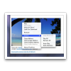

Flashless
Ein WebKit-Plugin, das eine Vorschau für Flash-Video-Dienste anzeigt und den Rest blockiert.
Ein WebKit-Plugin, das eine Vorschau für Flash-Video-Dienste anzeigt und den Rest blockiert.
Flashless blockiert Flash-Inhalte auf einer Webseite.
Blockierte Flash-Werbung.
Alle Flash-Elemente einer Webseite werden durch eine unaufdringliche Grafik ersetzt. Um den Flash-Inhalt zu sehen, klicken Sie einfach auf den Platzhalter.
 Bekommen Sie einen Überblick des Videos schon bevor der Flash-Inhalt geladen wird. So können Sie schon sehen, um was für ein Video es sich handelt, bevor Sie sich entschließen, es abzuspielen.
Bekommen Sie einen Überblick des Videos schon bevor der Flash-Inhalt geladen wird. So können Sie schon sehen, um was für ein Video es sich handelt, bevor Sie sich entschließen, es abzuspielen.
Ein Vorschaubild wird für die meisten der beliebten Video-Dienste angezeigt. Der Name der Herkunftsseite wird in der unteren rechten Ecke angezeigt.*
Sie können viele Videos ohne die Verwendung von Flash abspielen. Mit Quicktime werden die Videos weitaus ressourcenschonender abgespielt. Unterstützte Videos werden standardmäßig mit Quicktime abgespielt.
Klicken Sie einfach auf das Dreieck.*
 Wenn Sie Flashless in Safari 5 unter Mac OS X 10.6 Snow Leopard verwenden, können Sie Videos im Vollbild abspielen.
Wenn Sie Flashless in Safari 5 unter Mac OS X 10.6 Snow Leopard verwenden, können Sie Videos im Vollbild abspielen.
Um die Vollbildwiedergabe zu aktivieren, klicken Sie auf den Doppelpfeil unten rechts im Video.
Um die Flash-Variante zu sehen, klicken Sie mit gedrückter Umschalttaste auf den Platzhalter.
 Bei vielen beliebten Video-Diensten können Sie das Video direkt herunterladen. Einfach mit gedrückter Wahltaste auf den Pfeil klicken.*
Bei vielen beliebten Video-Diensten können Sie das Video direkt herunterladen. Einfach mit gedrückter Wahltaste auf den Pfeil klicken.*

 Nervige Werbung kann mit einem einfachen Menübefehl entfernt werden.
Viele weitere Optionen sind im Menü verfügbar. Sie können alle Elemente der selben Herkunft abspielen oder entfernen lassen. Sie können das sogar automatisch von Flashless erledigen lassen.
Schauen Sie Videos auf der Ursprungsseite an. Dort können Sie weitere Informationen, Kommentare und ähnliche Videos sehen. Diese Funktion ist besonders bei Blog-Seiten hilfreich, die Videos von verschiedenen Seiten zusammentragen.
Einfach mit gedrückter Befehlstaste auf den gebogenen Pfeil klicken.*
*) Liste der unterstützten Dienste.
Videostandbilder (cc) Harald Walker (erstes, zweites und letztes Bild), Nattu (Menü-Bild).
useless.github.com/de/flashless/features.html — Useless Coding.
Zuletzt am 26. Dezember 2010 geändert.
{kind=link}
{kind=link}